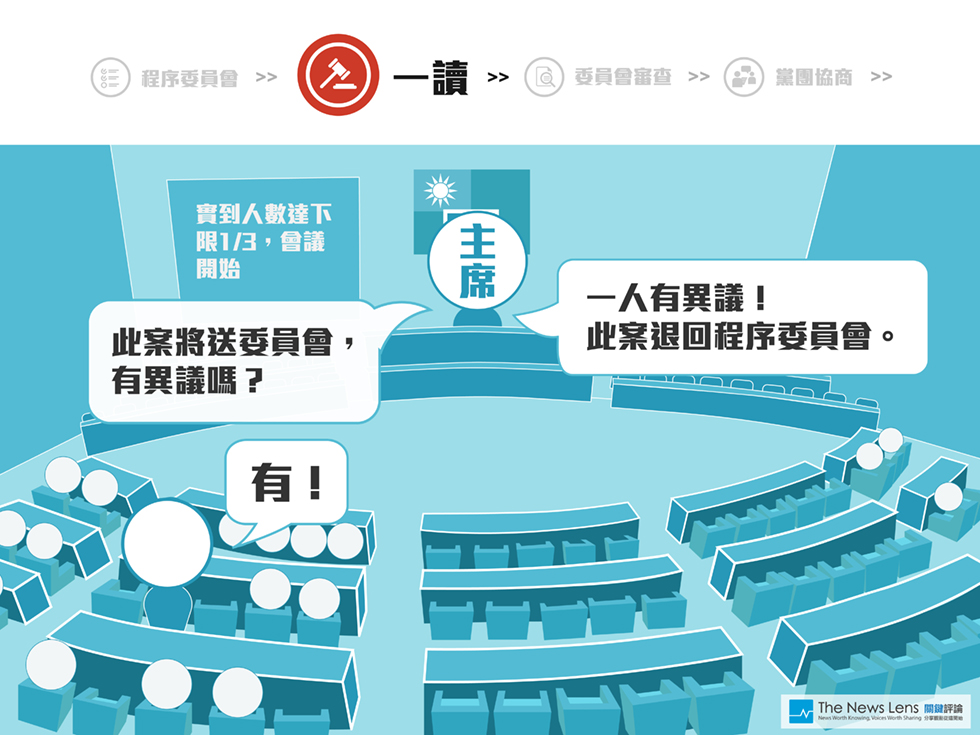
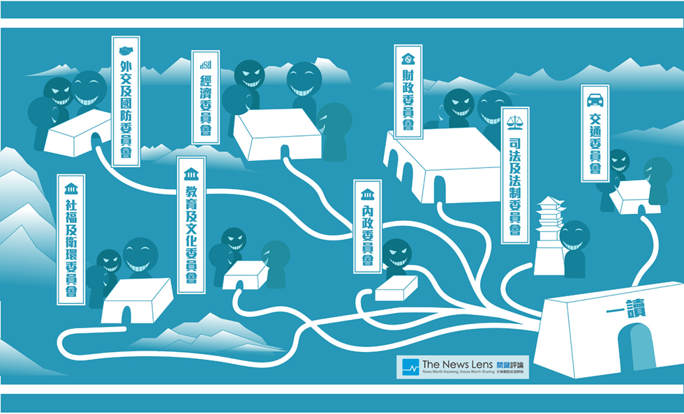

《立院出代誌：為什麼我們關心的法案總是過不了？》
設計：游承穎｜文字：李牧宜、羊正鈺
壹. 別讓我們的立委「里長化」
選立委不等於選里長，你知道他們的差別有多大嗎？
- 你知道「他們」分別代表了多少民意嗎？
-
再看看各級民意代表的「月薪」多少？
-
通常村里長的薪資，指的是政府每月發放的「村里長事務補助費」4.5萬元扣掉「村里辦公費」後實拿的數字。換句話說，他們並沒有實質的薪水。（註：里長並不屬於民意代表，在此列入只為了一併比較。）
而議員一個月可以領包括：開會期間出席費約5萬、法令研究費約12萬、助理費24萬、選民服務費2~3萬…等，大約月領43萬元。
至於我們的立法委員（參考立法院105年度預算書） 每月薪水（歲費公費）為190,500，年終1.5個月、公費助理每月412,000、加班費82,400、年終618,000；另外還有國會交流事務費200,000、文具郵票每月15,000、電話費12,000、油料費每月15,420、服務處租金每月20,000、辦公事務費每月14,672...等等。保守估計，養一位立委每月大約花掉國庫至少80萬元（年薪則是近千萬元）。
咱們花了這麼多血汗錢，以後你還敢把立委當作是里長...
-
通常村里長的薪資，指的是政府每月發放的「村里長事務補助費」4.5萬元扣掉「村里辦公費」後實拿的數字。換句話說，他們並沒有實質的薪水。（註：里長並不屬於民意代表，在此列入只為了一併比較。）
貳. 立委到底在衝啥毀
你知道「立法委員」到底有多大，憲法又賦予他們多重要的職責嗎？
你知道立法院裡的立委們有多重要嗎？他們其實大到可以讓行政院長、總統下台。
但是要了解立委，就得先知道為何需要立法院，它是把立法權從行政權中獨立出來，好制衡行政部門的權力，方式不外乎監督法案、審預算以及質詢官員。至於實際如何運作呢？
立法院一年分成兩個會期，2到5月底為第一（奇數）會期是審法案，9到12月為第二（偶數）會期是審預算。
俗稱的院會固定在會期時的週二、五，理論上所有立委都要參加（？）主要做議案的一讀、二讀、三讀。而每週一三四則由委員會針對通過一讀後的法案進行初審，那是法案、預算在審查及行政對決最主要的地方，也是人民監督立法院的觀戰重點。
用文言文來說（先別睡啊～），根據憲法第63條規定：「立法院有議決法律案、預算案、戒嚴案、大赦案、宣戰案、媾和案、條約案及國家其他重要事項之權。」最後，在《立法院職權行使法》中明確列出立委的職責。
參. 你關心的法案在哪兒？
想知道法案審理的過程中發生什麼代誌，又有哪些八卦嗎？
法案審理的流程說複雜，其實也還滿單純的，且聽我們娓娓道來：
- 提案：分為「法律」和「臨時提案」兩種，皆需案由、說明。法律提案需要有修正草案，由至少15人聯署。臨時提案則要10人，內容以及待解決事項為限。
- 【有卦】 程序委員會：審定各種提案的「手續是否完備」、分配質詢及提案討論的時間等。提案是否編列進會議，必須先通過這一關。
- 【有卦】 一讀：法案首度在立法機關內曝光了！主席會當場宣讀標題，若沒異議的話，法案隨即進入有關委員會審查或逕付二讀。
- 【有卦】委員會審查：應是法案及預算進行專業討論、審查，也是行政對決的會議、委員質詢問政的場所。
- 【有卦】 黨團協商：當案件在委員會沒有共識，則交由各黨團間私下討論，要在一個月內達成共識，若仍無共識則交由院會表決處理。為了避免黑箱，按規定必須將協商內容公開，包括錄影錄音和放上公報。
- 二讀：共有四個程序，分別為宣讀議案與報告、說明與質疑、廣泛討論、逐條討論。為了增加效率，通常送進二讀的法案，在黨團協商前的階段已經達成決議。
- 三讀：除非議案與憲法牴觸，否則只能對文字進行修正。
想要進一步了解可以到這，想看【八卦】的請往下：
肆. 程序委員會其實會「惡搞程序」
你想都沒想到，立法院第一個擋法案擋到海邊的地方居然是...
理論上呢～「程序委員會」是負責把關提案的第一道門，它扮演著類似郵局的角色，審核信件、包裹上的收件人、地址、郵票都完備後，就該將這些「提案」送進院會一讀。
而它的「召集委員（主席）」是由推舉形成，委員會中有19名委員，由各黨團依其在院會席次之比例分配之（所以主席當然是被多數黨長期把持...）。但重點是我們的「程序委員會」竟然以審程序之名，行擋法案之實：
【八卦】2012/4/17 立委賴士葆代表國民黨團，以「暫緩列案」擋下了民進黨提的難民法、政黨法草案等，僅表示「以後再處理比較適宜」►影片傳送門
立委段宜康立刻譴責賴士葆運用不當的議事手段，卡住委員的提案權與立法權，並呼籲「國民黨黨團請放手，避免國民黨同仁，因為黨團命令而受到社會的指責。」►影片傳送門
伍. 好不容易進了一讀，結果...
擋法案第二招：只要「一個人」有意見就退回？

進入一讀，也就正式進入立法機關內曝光（才開始有紀錄），但別開心得太早...《立法院議事規則第二十三條》規定：「如有出席委員提議，八人以上連署或附議，得提出異議，不經討論，逕付表決。如（院會）在場委員不足表決法定人數時，交程序委員會重新提出。（就是說林北又要重新回去排隊...）」
換句話說，院會一讀只要應到人數達1/3（達開會標準）、然後只要有「一個人」代表提出異議就會退回（因為一旦表決，多數黨就會動員啊）。許多法案因此失去了被審議的機會，還可能被黨團凌駕於其之上。（另一種可能，就是大黨故意人到得很少，造成根本無法開會）
【八卦】今年10月，土耳其海灘死了難民小男孩你還記得嗎？隨後台灣的《難民法草案》吵得沸沸揚揚，但其實今天已通過一讀的是：
- 行政院版本（執政黨推動）：101年03月02日提案，101年04月06日一讀。
- 陳學聖版本（國民黨立委）：102年10月25日提案，當日立刻進行一讀。
而另一個蕭美琴版本（民進黨立委），從101年04月13日提案，到104年10月02已被退回程序委員會高達70次，至今尚未一讀通過。 ►三個版本審議進度 ►蕭美琴版本被退回次數
陸. 等著我們的，正是「公開透明」的委員會
別以為過了一讀就海闊天空，接下來的委員會才讓你恨得牙癢癢...

過了一讀，理論上就該進入「實質審查」的各委員會了，先來談談這些委員會吧。
一般來說，委員會分成「常設委員會」、「特種委員會」兩大種。「特種委員會」像是學校的行政機關：會計處、訓導處等等，處理立法院內特定的事項，前面提到的「程序委員會」就屬於其中一種。
而「常設委員會」包含8個委員會：內政、外交國防、經濟、財政、教育文化、交通、司法法制、社會福利及衛生環境委員會，它們則相當於學校的專科老師，負責教數學、英文等。
【八卦】委員會設立的目的，是將法案的審查進行更專業的分工，達到有效率的審議、問政功能，而為了讓過程公開透明，人民可使用立法院IVOD系統來收看各委員會的荒腔走板...阿不！是開會Live轉播。。
但令人頭痛的是，IVOD常常在關鍵時刻被切斷訊號（藍色畫面、甚至直接跳黑畫面），還有一堆未公開的轉播死角，讓人質疑委員會審議、問政有真正被落實嗎？ ►【IVOD八卦】八卦傳送門
柒. 30秒通過服貿居然是「合法」der？
擋法案第三招：在「實質審查」的委員會，主席竟然可以如此「霸氣」
【八卦】你還記得「半分忠」通過服貿引爆太陽花學運的故事嗎？ ►服貿30秒強行闖關始末
2013/6/25，黨團協商針對服貿協議做出了「逐條審查、逐條表決」，並加開16場公聽會的決議。
最後一場公聽會後，立委張慶忠表示根據《立法院職權行使法》第61條：「委員會審查『行政命令』，應於院會交付審查後『三個月內』完成之；逾期未完成者，視為已審查。」他因此認為「服貿協議早該生效了」。
2014/3/10~12，民進黨連續幾天排案都遭到國民黨杯葛，接著就輪到國民黨委員當主席。
2014/3/17，張慶忠主席在委員會出現嚴重打架、推擠時，拿著還沒被搶走的麥克風，在台下用30秒宣布決議：「開會...服貿協議已逾3個月期限，依法視為已審查，送院會存查，散會！」 ►精彩影音傳送門
請問，說好的「實質審查」呢？
捌. 徒勞無功的美牛案
才開始討論就散會？隨隨便便就送協商，還有誰願意認真討論...
【八卦】2012/3/29，衛環委員會上所有委員正在認真討論、審議《食管法》時，身為主席的蔡錦隆卻偷偷跑到廁所旁，用小蜜蜂宣布「現在宣布開會，本案毫無共識，全案保留送朝野協商，散會！」 ►影音傳送門
而根據立法院審議程序，黨團協商階段若在一個月內未達成共識，可以直接進入院會表決。在野黨懷疑國民黨是為了方便自己，在黨團協商或院會運用多數黨的優勢，讓美牛案就此通過。
蔡錦隆此舉讓某些立委斷了理智線，立委陳亭妃情緒激動，緊抓住要進電梯的蔡錦隆並爆發肢體衝突，把蔡錦隆、吳育仁、林鴻池等人拉回委員會，拒絕散會，隔天在野黨則在院會佔領主席台，杯葛議事。
由此觀之，假如多數黨不願逐條審查法條，老是不正面表態而直接「送交協商」，主席（常由多數黨把持）又有足夠權力將法案強渡關山，導致各委員會「實質審查」的功能被架空。
何況即便進了黨團協商，卻可能只是到了另一個黑洞...
玖. 「黨團協商」到底把法案怎麼了？
擋法案第四招：當微調變成腰斬，「面目全非」的法案早已經回不去了...
在立法院職權行使法第70條規定，「議案進行協商時，由秘書長派員支援，全程錄影、錄音、記錄，併同協商結論，刊登公報。」
但問題就是一直以來，公報上只記錄「協商結論」，至於討論事項、協商過程皆不公開，因此被批為「密室協商」。公督盟更認為當立法院「黑箱黨團協商化」，只會讓大多數立委覺得都在做白工，以後也沒人要認真審法案了。
【八卦】就以104年中央政府預算為例，委員會初審僅決議小刪19億歲出預算，但進了黨團協商後卻大刀砍了「250億元」...先不論數字是否合理，但前後差距甚大，卻連個解釋都沒有（沒協商紀錄），實在很難讓人不憂慮，是否立院將「黨團協商」凌駕於「委員會」之上？ ►報導傳送門
【八卦】公職人員財產申報法第6條修正後刪掉「省（市）議員」字眼，如此一來讓所有省（市）議員都不用申報，但會議記錄中也只用「黨團協商」四個字帶過，沒有任何解釋。 ►法案記錄傳送門
拾. 這種協商是「保護少數」還是「討價還價」？
有人說表決是「多數暴力」，但我們要的是這樣「協商」嗎...
立法院長王金平曾說「黨團協商的目的是保障少數利益，以對話代替對抗，以協商化解衝突。」但究竟是讓少數發聲，還是互相牽制、討價還價？
【八卦】2014年底，經黨團協商達成修正草案共識的《動物保護法》，卻因台聯黨團遲遲未簽署，而無法交送程序會安排議程進入二讀。 ►報導傳送門
台灣防止虐待動物協會致電台聯黨團，得到的回應是：「因為台聯提出的其他法案被國民黨團擱置，所以我們只好選擇互相牽制。」而所謂的「其他法案」，有關人士懷疑可能是台聯提出降低政黨補助門檻的草案。
當時原先政黨補助款的得票率門檻為5%，台聯希望門檻降為1%，僵持不下只好選擇互相牽制。在多次協商、折衝之下，才終於在2015/1/22敲定為3.5%；而很巧的是，在動保團體和輿論的壓力之下，動保法修正案也在隔日順利通過。 ►報導傳送門
特別感謝【公民監督國會聯盟】的指導與協助，也歡迎參考公督盟出品的《第一次監督國會就上手》。
《待續》
核稿編輯 楊之瑜
SHARE：